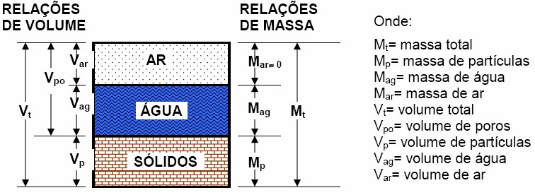
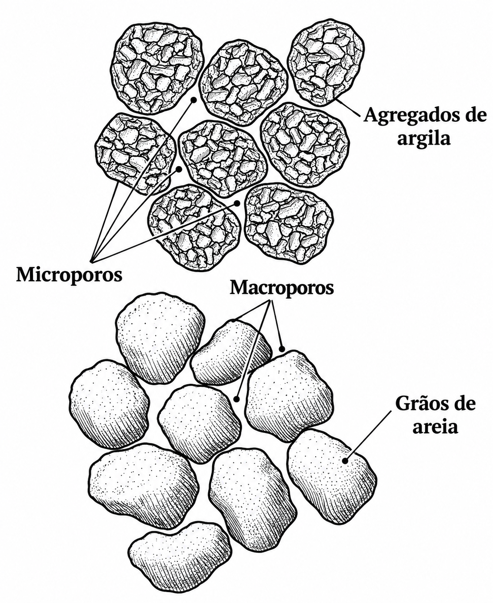

Física do solo:
Porosidade do solo
Gustavo Frosi
Instituto Federal do Paraná
Curso Superior em Engenharia Agronômica
28 de setembro de 2026
O que é porosidade?
O que é porosidade?
Porosidade é o espaço do solo não ocupado pela fração sólida, onde circulam o ar e a água.
- O solo é um sistema trifásico: sólido, líquido e gasoso;
- Os poros correspondem ao espaço ocupado pelas frações líquida e gasosa;
- A porosidade é variável no espaço, no tempo e na profundidade do solo.
O que é porosidade?
A porosidade total (Pt) é a relação entre o volume de poros (Vp) e o volume total (Vt) do solo.
- Pode ser expressa em decimal ou em percentagem;
- Está diretamente relacionada com a densidade do solo e a densidade de partículas;
- Quanto maior a densidade do solo, menor tende a ser a porosidade.
Porosidade do solo

\[Pt = \frac{Vpo}{Vt}=\frac{Var+Vag}{Vt}\]
Porosidade do solo
A porosidade é fixa?
Como modificar?
O arranjo das partículas sólidas define o espaço poroso, o qual pode ser alterado por manejo!
Porosidade do solo
Tipos de poros:
- Macroporos: poros de maior diâmetro (> 0,05 mm);
- Responsáveis pela aeração e drenagem da água por gravidade;
- Microporos: poros de menor diâmetro (< 0,05 mm);
- Responsáveis pela retenção de água por capilaridade (força maior do que a força gravitacional);
\[P_t = Macroporosidade + Microporosidade\]
Porosidade do solo

Porosidade do solo
Classificação dos poros do solo
- Macroporos — > 0,05 mm
- Drenagem da água gravitacional.
- Favorecem a circulação de ar.
- Permitem o crescimento das raízes.
- Podem constituir habitat de organismos do solo.
- Mesoporos — 0,03–0,05 mm
- Retêm água após a drenagem.
- Movimentam a água por capilaridade.
- Associados à atividade de fungos e pelos radiculares.
Porosidade do solo
Classificação dos poros do solo
- Microporos — 0,005–0,03 mm
- Geralmente presentes no interior dos agregados.
- Retêm água disponível às plantas.
- Constituem habitat de muitas bactérias.
- Ultramicroporos — 0,0001–0,005 mm
- Associados a agrupamentos de argila.
- Retêm água pouco ou não disponível às plantas.
- Limitam o acesso da maioria dos microrganismos.
Porosidade do solo
Classificação dos poros do solo
- Criptoporos — < 0,0001 mm
- Retêm água fortemente.
- Dimensão que restringe a presença de microrganismos e moléculas maiores.
Determinação da porosidade do solo
Determinação da porosidade do solo
Os métodos podem ser diretos (medindo diretamente o espaço poroso) ou indiretos (calculados a partir da massa de água).
Amostras com estrutura preservada!
Principais métodos:
- Cálculo a partir da massa de água;
- Mesa de tensão (separação de macro e microporos);
Determinação da porosidade total do solo
Método direto:
A porosidade total pode ser obtida pela determinação do volume de água contido nos poros do solo.
Isso é feito saturando-se uma amostra de solo com volume conhecido. Considerando que a densidade da água é aproximadamente \(1\ \text{g cm}^{-3}\), a massa de água, em gramas, é numericamente igual ao seu volume, em \(\text{cm}^3\).
Após a saturação, a amostra é pesada, obtendo-se a massa do solo saturado. Em seguida, a amostra é seca em estufa a 105 °C até massa constante e novamente pesada, obtendo-se a massa do solo seco.
Determinação da porosidade total do solo
A diferença entre as massas corresponde à massa de água presente nos poros:
\[ m_{\mathrm{água}} = m_{\mathrm{saturado}} - m_{\mathrm{seco}} \]
Como \(\rho_{\mathrm{água}} \approx 1\ \text{g cm}^{-3}\):
\[ V_{\mathrm{poros}} \approx V_{\mathrm{água}} = m_{\mathrm{água}} \]
Assim, conhecendo o volume total da amostra:
\[ \text{Porosidade} = \frac{V_{\mathrm{poros}}}{V_{\mathrm{total}}} \times 100 \]
Determinação da porosidade do solo
Determinação da porosidade do solo
Mesa de tensão:
Utilizada para separar a macro e a microporosidade, a partir da umidade retida sob determinada tensão.
Etapas:
- Amostras com estrutura preservada são saturadas com água;
- As amostras são submetidas a uma tensão de 6 kPa (60 cm de coluna de água);
- A água retida acima dessa tensão corresponde à microporosidade;
- A diferença entre a saturação e a microporosidade corresponde à macroporosidade.
Determinação da porosidade do solo
Mesa de tensão:
\[Microporosidade = \frac{(M_{u}-M_{s})}{V_t}=\frac{V_a}{V_t}\]
Mu = massa da amostra saturada após tensão de 6 kPa (g); Ms = massa da amostra seca em estufa (g); Vt = volume total do cilindro (cm3).
\[Macroporosidade = P_t - Microporosidade\]
Determinação da porosidade do solo
Mesa de tensão:
Exemplos:
Um cilindro de 100 cm3 apresentou porosidade total de 55%. Após submetida à tensão de 6 kPa, a amostra reteve 30 cm3 de água. Qual a macro e a microporosidade?
\[Microporosidade = \frac{30}{100}*100 = 30\%\]
\[Macroporosidade = 55-30 = 25\%\]
Fatores que afetam a porosidade do solo
Fatores que afetam a porosidade do solo
Intrínsecos
- Textura;
- Estrutura;
- Mineralogia;
- Matéria orgânica.
Extrínsecos
- Máquinas e implementos agrícolas;
- Tráfego de máquinas e animais;
- Manejo e sistema de cultivo.
Fatores que afetam a porosidade do solo
Textura:
- Solos arenosos: poros maiores, porém em menor quantidade (menor Pt total, maior macroporosidade relativa);
- Solos argilosos: poros menores e em maior quantidade (maior Pt total, maior microporosidade relativa).
Fatores que afetam a porosidade do solo
Compactação:
O tráfego de máquinas reduz principalmente a macroporosidade, prejudicando a aeração e a infiltração de água.
Relação entre a porosidade e aspectos agronômicos
Porosidade de aeração:
- Valores de macroporosidade abaixo de 10% são considerados limitantes ao crescimento radicular;
- A restrição de oxigênio afeta a respiração radicular e a absorção de nutrientes;
- Solos compactados apresentam menor macroporosidade e maior risco de deficiência de aeração.
Relação entre a porosidade e aspectos agronômicos
Infiltração e armazenamento de água:
- Macroporos: condução rápida de água (infiltração e drenagem);
- Microporos: armazenamento de água disponível às plantas;
- O equilíbrio entre macro e microporosidade é essencial para o manejo da água no solo.
Relações entre propriedades
Relações entre propriedades
\[ P_t = \frac{V_p}{V_t} = \frac{V_t - V_s}{V_t} = \frac{ \frac{M_s}{D_s} - \frac{M_s}{D_p} }{ \frac{M_s}{D_s} } = 1- \frac{M_s}{D_p}*\frac{D_s}{M_s} = 1 - \frac{D_s}{D_p} \]
\(P_t\) — porosidade total do solo, expressa como fração ou porcentagem (%).
\(V_p\) — volume de poros do solo, ou seja, o volume ocupado pelo espaço poroso.
\(V_t\) — volume total da amostra de solo, correspondente à soma do volume dos sólidos e do volume de poros.
\(V_s\) — volume ocupado pelos sólidos do solo.
\(M_s\) — massa de sólidos do solo, geralmente expressa em g.
\(D_s\) — densidade do solo, definida como a razão entre a massa de sólidos e o volume total da amostra:
\(D_p\) — densidade de partículas, definida como a razão entre a massa de sólidos e o volume ocupado exclusivamente pelas partículas sólidas:
Exercícios
Exercícios
1 - Um cilindro de 100 cm3 apresentou porosidade total de 50%. Após tensão de 6 kPa, a amostra reteve 18 cm3 de água. Qual a macro e a microporosidade dessa amostra?
Resposta:
\[Microporosidade = \frac{18}{100}= 0,18 cm^3 cm^3 (18\%)\]
\[Porosidade~total = \frac{100*50}{100}= 50\]
\[Macroporosidade = \frac{(50-18)}{100}= 0,32 cm^3 cm^3 (32\%)\]
Exercícios
2 - Um cilindro de 200 cm3 apresentou porosidade total de 45%. Após tensão de 6 kPa, a amostra reteve 52 cm3 de água. Qual a macro e a microporosidade dessa amostra?
Resposta:
\[Microporosidade = \frac{52}{200}= 0,26 cm^3 cm^3 (26\%)\]
\[Porosidade~total = \frac{200*45}{100}= 90\]
\[Macroporosidade = \frac{(90-52)}{200}= 0,19 cm^3 cm^3 (19\%)\]
Exercícios
3 - Um cilindro de 150 cm3 apresentou porosidade total de 60%. Após tensão de 6 kPa, a amostra reteve 45 cm3 de água. Qual a macro e a microporosidade dessa amostra?
Resposta:
\[Microporosidade = \frac{45}{150}= 0,3 cm^3 cm^3 (30\%)\]
\[Porosidade~total = \frac{150*60}{100}= 90\]
\[Macroporosidade = \frac{(90-45)}{150}= 0,3 cm^3 cm^3 (30\%)\]
Exercícios
4 - Um cilindro de 250 cm3 apresentou porosidade total de 48%. Após tensão de 6 kPa, a amostra reteve 80 cm3 de água. Qual a macro e a microporosidade dessa amostra?
Resposta:
\[Microporosidade = \frac{80}{250}= 0,32 cm^3 cm^3 (32\%)\]
\[Porosidade~total = \frac{250*48}{100}= 120\]
\[Macroporosidade = \frac{(120-80)}{250}= 0,16 cm^3 cm^3 (16\%)\]
Exercícios
5 - Um cilindro de 180 cm3 apresentou porosidade total de 55%. Após tensão de 6 kPa, a amostra reteve 63 cm3 de água. Qual a macro e a microporosidade dessa amostra?
Resposta:
\[Microporosidade = \frac{63}{180}= 0,35 cm^3 cm^3 (35\%)\]
\[Porosidade~total = \frac{180*55}{100}= 99\]
\[Macroporosidade = \frac{(99-63)}{180}= 0,2 cm^3 cm^3 (20\%)\]
Exercícios
6 - Uma amostra de solo apresentou densidade do solo de 1,35 g cm-3 e densidade de partícula de 2,70 g cm-3. Qual a porosidade total desse solo?
Resposta:
\[P_t = \left(1-\frac{D_s}{D_p}\right)*100\]
\[P_t = \left(1-\frac{1,35}{2,70}\right)*100\]
\[P_t = 50~\%\]
Exercícios
7 - Um solo apresenta densidade de partícula de 2,65 g cm-3 e porosidade total de 42%. Qual a densidade desse solo?
Resposta:
\[P_t = \left(1-\frac{D_s}{D_p}\right)*100\]
\[42 = \left(1-\frac{D_s}{2,65}\right)*100\]
\[D_s = 2,65*(1-0,42) = 1,54~g~cm^3\]
Fim!